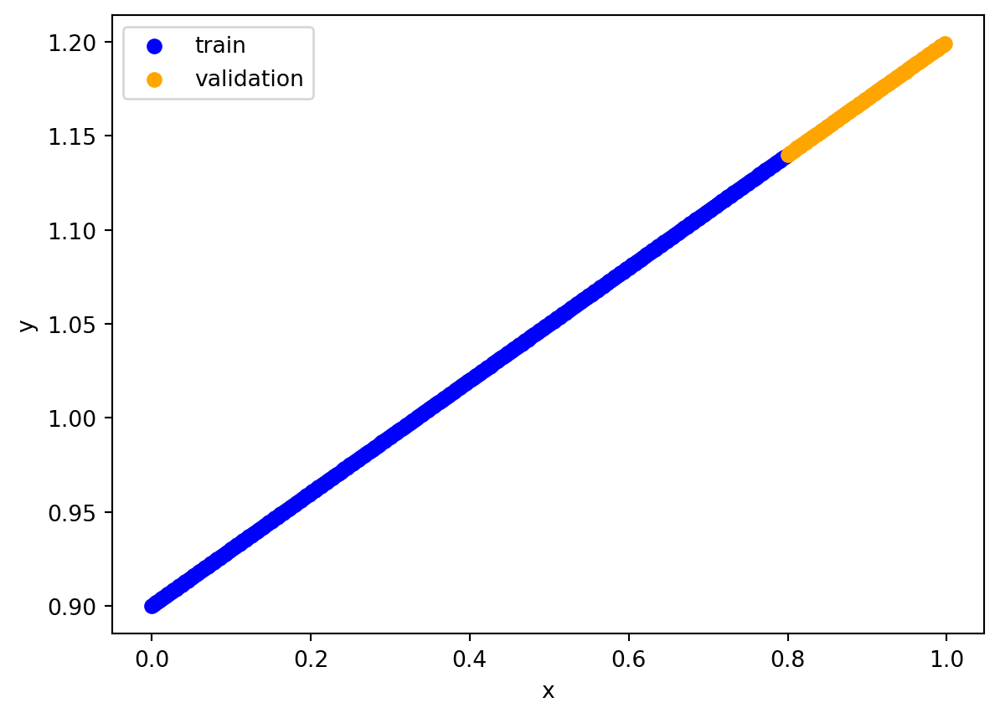
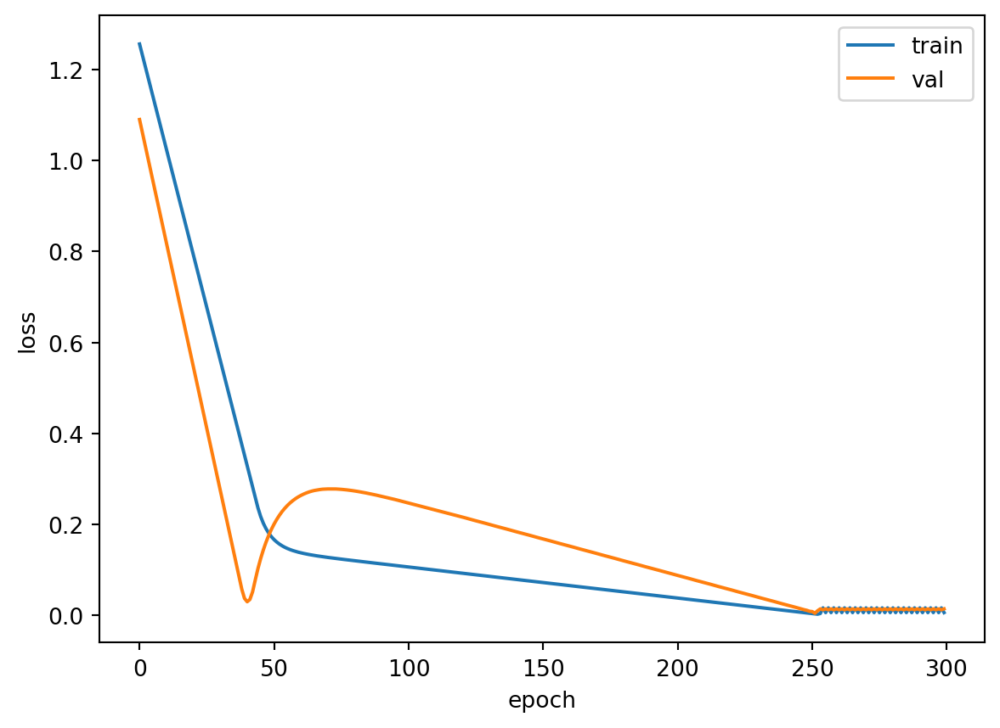
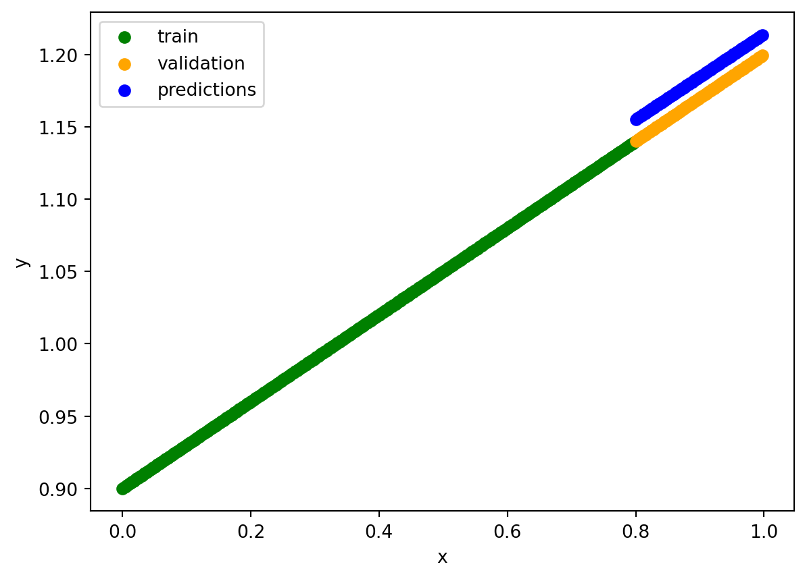

import numpy as np
import torch
import torch.nn as nn
from matplotlib import pyplot as pltPyTorch Exercises
Imports
PyTorch Exercises 00 pytorch fundamentals
https://www.learnpytorch.io/00_pytorch_fundamentals/#exercises
torch.manual_seed(42)
torch.cuda.manual_seed(1234)
x = torch.randn(7 ,7)
y = torch.randn(1 ,7)
z = torch.matmul(x, y.T)
device = torch.device("cuda" if torch.cuda.is_available() else "cpu")
torch.manual_seed(42)
gpu_1 = torch.randn(2 ,3).to(device)
torch.manual_seed(42)
gpu_2 = torch.randn(2 ,3).to(device)
gpu_3 = torch.matmul(gpu_1, gpu_2.T)
print(gpu_3.max())
print(gpu_3.argmax())
print(gpu_3.reshape(4)[3])
print(gpu_3.argmin())
torch.manual_seed(7)
original_tensor = torch.randn(1, 1, 1, 10)
squeezed_tensor = original_tensor.squeeze()
print(original_tensor.shape, original_tensor)
print(squeezed_tensor.shape, squeezed_tensor)tensor(1.3486, device='cuda:0')
tensor(3, device='cuda:0')
tensor(1.3486, device='cuda:0')
tensor(1, device='cuda:0')
torch.Size([1, 1, 1, 10]) tensor([[[[-0.1468, 0.7861, 0.9468, -1.1143, 1.6908, -0.8948, -0.3556,
1.2324, 0.1382, -1.6822]]]])
torch.Size([10]) tensor([-0.1468, 0.7861, 0.9468, -1.1143, 1.6908, -0.8948, -0.3556, 1.2324,
0.1382, -1.6822])PyTorch Exercises 01 pytorch Workflow fundamentals
device = torch.device("cuda" if torch.cuda.is_available() else "cpu")
x = torch.arange(0, 1, 0.0025, dtype=torch.float32).unsqueeze(dim=1).to(device)
print(x.shape)
target_bias = 0.9
target_weight = 0.3
y = target_bias + target_weight * x
training_split = int(0.8 * len(x))
x_train, y_train = x[:training_split], y[:training_split]
x_val, y_val = x[training_split:], y[training_split:]
plt.scatter(x_train.cpu(), y_train.cpu(), label="train", color="blue")
plt.scatter(x_val.cpu(), y_val.cpu(), label="validation", color="orange")
plt.legend()
plt.xlabel("x")
plt.ylabel("y")
plt.show()
class LinearRegression(nn.Module):
def __init__(self):
super().__init__()
self.weight = nn.Parameter(torch.randn(1, device=device))
self.bias = nn.Parameter(torch.randn(1, device=device))
def forward(self, x):
return self.weight * x + self.bias
torch.manual_seed(2)
model_0 = LinearRegression()
loss_fn = nn.L1Loss()
optimizer = torch.optim.SGD(model_0.parameters(), lr=0.02)
nun_epochs = 300
epochs = []
train_losses = []
val_losses = []
for epoch in range(nun_epochs):
model_0.train()
y_pred = model_0(x_train)
loss = loss_fn(y_pred, y_train)
optimizer.zero_grad()
loss.backward()
optimizer.step()
model_0.eval()
with torch.inference_mode():
y_val_pred = model_0(x_val)
val_loss = loss_fn(y_val_pred, y_val)
epochs.append(epoch)
train_losses.append(loss.item())
val_losses.append(val_loss.item())
if epoch % 20 == 0:
print(f"epoch {epoch+1}: train loss {loss}, val loss {val_loss}")
plt.plot(epochs, train_losses, label="train")
plt.plot(epochs, val_losses, label="val")
plt.xlabel("epoch")
plt.ylabel("loss")
plt.legend()
plt.show()
with torch.inference_mode():
y_pred = model_0(x_val)
plt.scatter(x_train.detach().cpu(), y_train.detach().cpu(), label="train", color="green")
plt.scatter(x_val.cpu(), y_val.cpu(), label="validation", color="orange")
plt.scatter(x_val.cpu(), y_pred.cpu(), label="predictions", color="blue")
plt.legend()
plt.xlabel("x")
plt.ylabel("y")
plt.show()
torch.save(model_0.state_dict(), "model_0.pth")
model_0_loaded = LinearRegression()
model_0_loaded.load_state_dict(torch.load("model_0.pth"))
with torch.inference_mode():
y_pred = model_0_loaded(x_val)
plt.scatter(x_train.detach().cpu(), y_train.detach().cpu(), label="train", color="green")
plt.scatter(x_val.cpu(), y_val.cpu(), label="validation", color="orange")
plt.scatter(x_val.cpu(), y_pred.cpu(), label="predictions", color="blue")
plt.legend()
plt.xlabel("x")
plt.ylabel("y")
plt.show()torch.Size([400, 1])
epoch 1: train loss 1.256136417388916, val loss 1.0901395082473755
epoch 21: train loss 0.792536199092865, val loss 0.546789288520813
epoch 41: train loss 0.3289359509944916, val loss 0.030328065156936646
epoch 61: train loss 0.1377410739660263, val loss 0.26404279470443726
epoch 81: train loss 0.12036710232496262, val loss 0.27378952503204346
epoch 101: train loss 0.1066260114312172, val loss 0.24720819294452667
epoch 121: train loss 0.09295617789030075, val loss 0.21629105508327484
epoch 141: train loss 0.07928847521543503, val loss 0.18416239321231842
epoch 161: train loss 0.0656210333108902, val loss 0.15220680832862854
epoch 181: train loss 0.05195329710841179, val loss 0.12007813900709152
epoch 201: train loss 0.03828587755560875, val loss 0.08812284469604492
epoch 221: train loss 0.024618105962872505, val loss 0.056167688220739365
epoch 241: train loss 0.010950678959488869, val loss 0.024039505049586296
epoch 261: train loss 0.016762902960181236, val loss 0.012556073255836964
epoch 281: train loss 0.016762902960181236, val loss 0.012556073255836964
